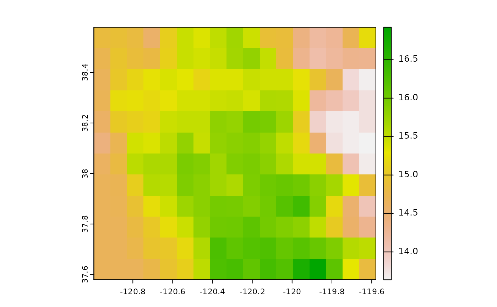
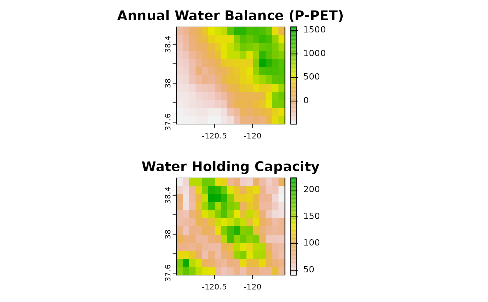
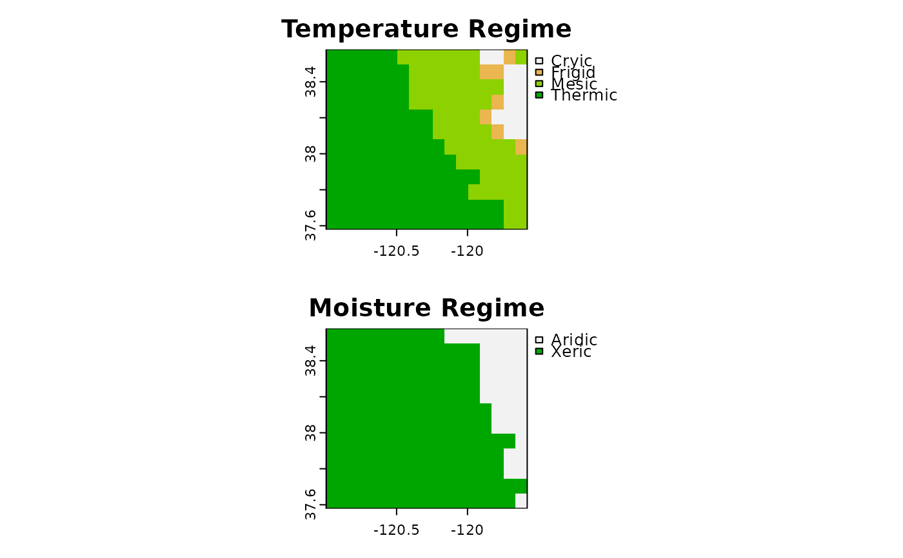
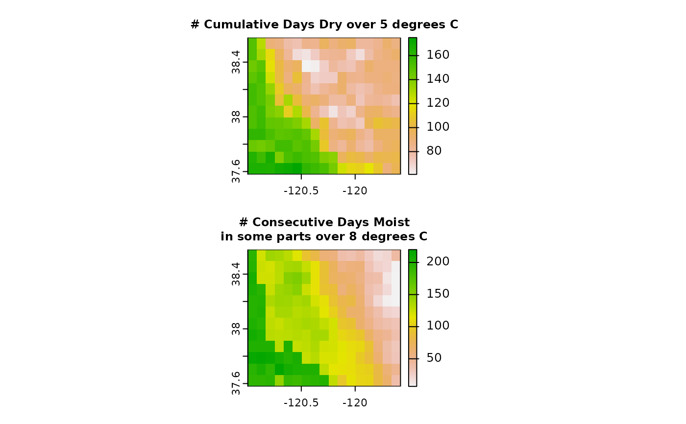

newhall_batch() provides an interface to multiple runs of the jNSM BASICSimulationModel() for the CSV batch file input format used in jNSM 1.6.0, plus the SpatRaster and RasterStack R object types.
newhall_batch(<character>) - one or more paths to jNSM Comma-Separated Value '.csv' batch files; see details for required column names
newhall_batch(<SpatRaster>) - a SpatRaster object, containing the required column names as layers
newhall_batch(<RasterStack>)- a RasterStack object, containing the required column names as layers
# S3 method for default
newhall_batch(
.data = NULL,
unitSystem = "metric",
soilAirOffset = ifelse(unitSystem %in% c("in", "english"), 4.5, 2.5),
amplitude = 0.66,
hasOHorizon = FALSE,
isSaturated = FALSE,
verbose = TRUE,
toString = TRUE,
checkargs = TRUE,
cores = NULL,
core_thresh = NULL,
file = NULL,
nrows = NULL,
overwrite = NULL
)
newhall_batch(
.data,
unitSystem = "metric",
soilAirOffset = ifelse(unitSystem %in% c("in", "english"), 4.5, 2.5),
amplitude = 0.66,
hasOHorizon = FALSE,
isSaturated = FALSE,
verbose = TRUE,
toString = TRUE,
checkargs = TRUE,
cores = 1,
core_thresh = 25000L,
file = paste0(tempfile(), ".tif"),
nrows = nrow(.data),
overwrite = TRUE
)
# S3 method for character
newhall_batch(
.data,
unitSystem = "metric",
soilAirOffset = ifelse(unitSystem %in% c("in", "english"), 4.5, 2.5),
amplitude = 0.66,
hasOHorizon = FALSE,
isSaturated = FALSE,
verbose = TRUE,
toString = TRUE,
checkargs = TRUE,
cores = 1,
core_thresh = 25000L,
file = paste0(tempfile(), ".tif"),
nrows = nrow(.data),
overwrite = TRUE
)
# S3 method for SpatRaster
newhall_batch(
.data,
unitSystem = "metric",
soilAirOffset = ifelse(unitSystem %in% c("in", "english"), 4.5, 2.5),
amplitude = 0.66,
hasOHorizon = FALSE,
isSaturated = FALSE,
verbose = TRUE,
toString = FALSE,
checkargs = TRUE,
cores = 1,
core_thresh = 25000L,
file = paste0(tempfile(), ".tif"),
nrows = nrow(.data)/(terra::ncell(.data)/core_thresh),
overwrite = TRUE
)
# S3 method for RasterBrick
newhall_batch(
.data,
unitSystem = "metric",
soilAirOffset = ifelse(unitSystem %in% c("in", "english"), 4.5, 2.5),
amplitude = 0.66,
hasOHorizon = FALSE,
isSaturated = FALSE,
verbose = TRUE,
toString = TRUE,
checkargs = TRUE,
cores = 1,
core_thresh = 25000L,
file = paste0(tempfile(), ".tif"),
nrows = ifelse(ncol(.data) * nrow(.data) < core_thresh, nrow(.data), floor(ncol(.data)
* nrow(.data)/(core_thresh * cores))),
overwrite = TRUE
)
# S3 method for RasterStack
newhall_batch(
.data,
unitSystem = "metric",
soilAirOffset = ifelse(unitSystem %in% c("in", "english"), 4.5, 2.5),
amplitude = 0.66,
hasOHorizon = FALSE,
isSaturated = FALSE,
verbose = TRUE,
toString = TRUE,
checkargs = TRUE,
cores = 1,
core_thresh = 25000L,
file = paste0(tempfile(), ".tif"),
nrows = ifelse(ncol(.data) * nrow(.data) < core_thresh, nrow(.data), floor(ncol(.data)
* nrow(.data)/(core_thresh * cores))),
overwrite = TRUE
)a data.frame or character vector of paths to CSV files; or a SpatRaster or RasterStack containing the same data elements and names as included in the batch data.frame/CSV format
Default: "metric" OR "mm" OR "cm" use millimeters of rainfall (default for the BASIC model); set to unitSystem="english" OR unitSystem="in" to transform English (inches of precipitation; degrees Fahrenheit) inputs to metric (millimeters of precipitation; degrees Celsius) before running simulation
air-soil temperature offset. Conventionally for jNSM: 2.5 for metric units (default); 4.5 for english units. Can optionally be specified as a layer in a raster input.
difference in amplitude between soil and air temperature sine waves. Default 0.66. Can optionally be specified as a layer in a raster input.
Used for cryic soil temperature regime criteria. Default: FALSE. Can optionally be specified as a layer in a raster input.
Used for cryic soil temperature regime and aquic soil moisture regime mask. Default: FALSE. Can optionally be specified as a layer in a raster input.
print message about number of simulations and elapsed time
call toString() method on each NewhallResults object and store in output column of result?
logical; check argument length and data types for each run? Default: TRUE
integer. Number of cores; used only for processing SpatRaster or Raster* input. Default: 1 processes batches sequentially.
integer. Approximate number of cells to target per core and batch; used to calculate default value for nrows. Default 25000 cells.
character. Path to write incremental raster processing output for large inputs that do not fit in memory; passed to terra::writeStart() and used only for processing SpatRaster or Raster* input; defaults to a temporary file created by tempfile() if needed
integer. Number of rows to use per block; passed to terra::readValues() terra::writeValues(); used only for processing SpatRaster or Raster* input; defaults to number of rows in .data if it is small. If the number of cells in .data exceeds core_thresh, then the number of rows is calculated based on the number of cells in .data, core_thresh and cores.
logical. Overwrite file? passed to terra::writeStart(); defaults to TRUE if needed
When input is a data.frame or character vector of paths to CSV files, result is a a data.frame with key model outputs (see details) containing list columns with Java Objects for NewhallDataset, NewhallResults. If toString=TRUE the column output is a character containing the toString() output from NewhallResults
For SpatRaster input returns a SpatRaster containing numeric and categorical model outputs. RasterBrick inputs are first converted to SpatRaster, and a SpatRaster is returned
The main inputs to the model are monthly precipitation and air temperature for each site, the location, the soil available water storage, and the elevation.
The following columns and names are required in the input data/object:
Latitude and Longitude in WGS84 Decimal Degrees: "latDD", "lonDD"
Monthly Air Temperature (degrees C or F): "tJan", "tFeb", "tMar", "tApr", "tMay", "tJun", "tJul", "tAug", "tSep", "tOct", "tNov", "tDec"
Monthly Precipitation (millimeters or inches of rain): "pJan", "pFeb", "pMar", "pApr", "pMay", "pJun", "pJul", "pAug", "pSep", "pOct", "pNov", "pDec"
Profile Available Water Storage (millimeters; Default 200): "awc"
Elevation (meters or feet): "elev"
The concept of "dry" versus "moist" is expressed semi-quantitatively in the Newhall model with three different categories of moisture being recognized: "moist", "moist/dry" and "dry."
Of interest to the classification of climate regimes of a soil are not only when/where the soil is dry but how that moisture or lack thereof corresponds with prevailing temperature conditions.
"annualRainfall" - sum of monthly precipitation values over the year
"waterHoldingCapacity" - total water storage of soil profile in units of length (mm). Default: 200 millimeters (8 inches) of water storage. This is approximately the average water storage when calculated using SSURGO available water capacities and depths for the soils in CONUS.
"annualWaterBalance" - sum of difference of precipitation and estimated mean potential evapotranspiration (Thornthwaite, 1948) by month
"annualPotentialEvapotranspiration" - sum of mean monthly potential evapotranspiration (Thornthwaite, 1948)
"summerWaterBalance" - sum of (summer months only) difference of precipitation and estimated mean potential evapotranspiration by month
"dryDaysAfterSummerSolstice" - number of days "dry" after June 21; used in definition of Xeric moisture regime
"moistDaysAfterWinterSolstice" - number of days "moist" after December 21; used in definition of Xeric moisture regime
"numCumulativeDaysDry" - cumulative number of "dry" days per year
"numCumulativeDaysMoistDry" - cumulative number of days "intermediate between moist and dry" per year
"numCumulativeDaysMoist" - cumulative number of days "moist" per year
"numCumulativeDaysDryOver5C" - cumulative number of days "dry" per year when the soil temperature is over 5 degrees C
"numCumulativeDaysMoistDryOver5C" - cumulative number of days "intermediate between moist and dry" per year when the soil temperature is over 5 degrees C
"numCumulativeDaysMoistOver5C" - cumulative number of days "moist" per year when the soil temperature is over 5 degrees C
"numConsecutiveDaysMoistInSomeParts" - maximum number of consecutive days per year where some parts of the profile are "moist"
"numConsecutiveDaysMoistInSomePartsOver8C" - maximum number of consecutive days per year where some parts of the profile are "moist" and the soil temperature is over 8 degrees C
"temperatureRegime" - estimated Soil Temperature Regime; one of "Pergelic", "Cryic", "Frigid", "Mesic", "Thermic", "Hyperthermic", "Isofrigid", "Isomesic", "Isothermic", or "Isohyperthermic"
"moistureRegime" - estimated Soil Moisture Regime; one of "Aridic", "Ustic", "Xeric", "Udic", "Perudic", or "Undefined"
"regimeSubdivision1" - estimated "Moisture Regime Subdivision #1"; one of "Typic", "Weak", "Wet", "Dry", "Extreme", "Xeric", "Udic", "Aridic", or " " (See van Wambecke et al., 1981)
"regimeSubdivision2" - estimated "Moisture Regime subdivision #2"; one of "Aridic", "Tempustic", "Tropustic", "Tempudic", "Xeric", "Udic", "Tropudic", "Undefined", or " " (See van Wambecke et al., 1981)
"Years" are based on uniform 12 months with 30 days each for a total of 360 days (no leap years).
The following elements have a many:1 relationship with model runs and are not (yet) included in the standard output, but can be accessed using an rJava object reference to a NewhallResults class.
"meanPotentialEvapotranspiration" - estimated mean monthly potential evapotranspiration (Thornthwaite, 1948)
"temperatureCalendar" - compressed (360 day) grid "calendar" showing days above 5 and 8 degrees C
"moistureCalendar" - compressed (360 day) grid "calendar" showing "moist", "moist/dry" and "dry" days.
van Wambeke, A. and Newhall, F. and United States Soil Management Support Services (1981) Calculated Soil Moisture and Temperature Regimes of South America: A Compilation of Soil Climatic Regimes calculated by using a mathematical model developed by F. Newhall (Soil Conservation Service, USDA, 1972). SMSS : Technical Monograph : Soil management support services. New York State College of Agriculture and Life Sciences, Cornell University, Department of Agronomy. Available online: https://books.google.com/books?id=jwtIAAAAYAAJ
Thornthwaite, C. W. (1948). An Approach toward a Rational Classification of Climate. Geographical Review, 38(1), 55–94. https://doi.org/10.2307/210739
Newhall, F., Berdanier, C. (1996) Calculation of soil moisture regimes from the climatic record. National Soil Survey Center, Natural Resources Conservation Service, U.S. Dept. of Agriculture. Available online: https://www.nrcs.usda.gov/Internet/FSE_DOCUMENTS/nrcs142p2_052248.pdf
BASICSimulationModel(): create an instance of the Java Newhall Simulation Model
newhall_simulation(): run a single Newhall model instance, return NewhallResults object
library(terra)
#> terra 1.7.46
x <- terra::rast(system.file("extdata", "prism_issr800_sample.tif", package="jNSMR"))
## optional: make larger extent (requires full cache)
# x <- c(newhall_prism_extent(ext(x) * 4), newhall_issr800_extent(ext(x) * 4))
x$elev <- 0 # elevation is not currently used by the model directly
# reduce resolution (for fast example)
x2 <- aggregate(x, 10, na.rm = TRUE)
# calculate winter, summer and annual average temperatures
d <- as.data.frame(x2)
x2$mwst <- rowMeans(d[, c("tDec","tJan","tFeb")])
x2$msst <- rowMeans(d[, c("tJun","tJul","tAug")])
x2$mast <- rowMeans(d[, paste0("t", month.abb)])
x2$dif <- x2$msst - x2$mwst
plot(x2$dif)

## 1/10th resolution
system.time({ y <- newhall_batch(x2) })
#> newhall_batch: ran n=204 simulations in 0.52 secs
#> user system elapsed
#> 1.024 0.044 0.713
## ~1/3 resolution
# system.time({ y <- newhall_batch(aggregate(x, 3)) })
## full resolution
# system.time({ y <- newhall_batch(x) })
par(mfrow=c(2, 1))
terra::plot(y$annualWaterBalance, main = "Annual Water Balance (P-PET)")
terra::plot(y$waterHoldingCapacity, main = "Water Holding Capacity")

terra::plot(y$temperatureRegime, main = "Temperature Regime")
terra::plot(y$moistureRegime, main = "Moisture Regime")

terra::plot(y$numCumulativeDaysDryOver5C, cex.main=0.75,
main = "# Cumulative Days Dry over 5 degrees C")
terra::plot(y$numConsecutiveDaysMoistInSomePartsOver8C, cex.main=0.75,
main = "# Consecutive Days Moist\nin some parts over 8 degrees C")

par(mfrow=c(1,1))